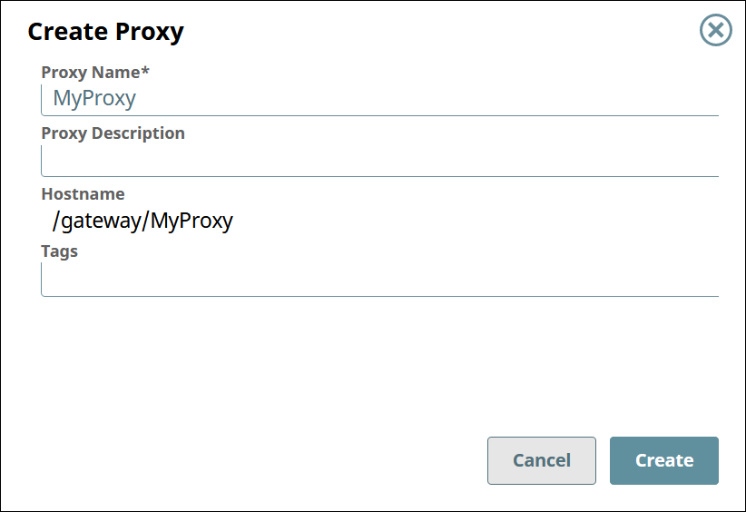

Proxies for APIs
Managing proxies for your APIs and third-party APIs.
Overview
SnapLogic's proxies allow you to seamlessly integrate with your APIs and third-party APIs by providing API administration, monitoring, and security management within the API Manager.
Prerequisites
- Org Admin permissions
Viewing the List of Proxies
To view the list of proxies,
- In SnapLogic Manager, go to .
- In the API Manager, go to the APIs & Proxies tab.
- Set Filter by Type to Proxy and click Search.

Creating a Proxy
To create a proxy,
- In the API Manager, go to the APIs & Proxies tab.
- Click the plus icon (
 ).
). - Select New Proxy from the dropdown.
- Configure the new proxy.

Field Description Proxy Name The name for your proxy. - Must be unique.
- Must begin with alphanumeric characters A-Z, a-z, or 0-9.
- Cannot contain |, <, >, [, ], {, }, #, ?, /, and \.
- Must be no more than 256 characters. If the name includes double-byte characters, the maximum length is shorter.
The proxy name is appended to the Hostname.
Proxy Description (Optional) Information about the proxy. Hostname The prefix /gateway/is concatenated with the Proxy Name.Tags (Optional) Tags you can use to organize your proxies.
Deleting a Proxy
To delete a proxy,
- In the API Manager, go to the APIs & Proxies tab.
- Hover over the row of the proxy.
- Click the trash icon (
 ) that appears at the end of the row.
) that appears at the end of the row.